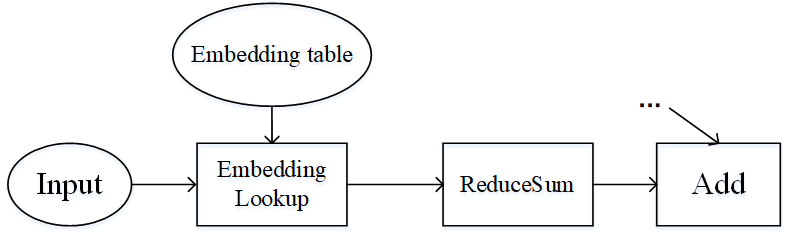

Host&Device异构

概述
在深度学习中，工作人员时常会遇到超大模型的训练问题，即模型参数所占内存超过了设备内存上限。为高效地训练超大模型，一种方案便是分布式并行训练，也就是将工作交由同构的多个加速器（如Ascend 910 AI处理器，GPU等）共同完成。但是这种方式在面对几百GB甚至几TB级别的模型时，所需的加速器过多。而当从业者实际难以获取大规模集群时，这种方式难以应用。另一种可行的方案是使用主机端（Host）和加速器（Device）的混合训练模式。此方案同时发挥了主机端内存大和加速器端计算快的优势，是一种解决超大模型训练较有效的方式。
在MindSpore中，用户可以将待训练的参数放在主机，同时将必要算子的执行位置配置为主机，其余算子的执行位置配置为加速器，从而方便地实现混合训练。
相关接口：
mindspore.ops.Primitive.set_device()：设置Primitive执行后端。mindspore.nn.Optimizer.target：该属性用于指定在主机（host）上还是设备（device）上更新参数。输入类型为str，只能是”CPU”，”Ascend”或”GPU”。
基本原理
流水线并行和算子级并行适用于模型的算子数量较大，同时参数较均匀的分布在各个算子中。如果模型中的算子数量较少，同时参数只集中在几个算子中呢？Wide&Deep就是这样的例子，如下图所示。Wide&Deep中的Embedding table作为需训练的参数可达几百GB甚至几TB，若放在加速器(device)上执行，那么所需的加速器数量巨大，训练费用昂贵。另一方面，若使用加速器计算，其获得的训练加速有限，同时会引发跨服务器的通信量，端到端的训练效率不会很高。

图：Wide&Deep模型的部分结构
仔细分析Wide&Deep模型的特殊结构后可得：Embedding table虽然参数量巨大，但其参与的计算量很少，可以将Embedding table和其对应的算子EmbeddingLookup算子放置在Host端，利用CPU进行计算，其余算子放置在加速器端。这样做能够同时发挥Host端内存量大、加速器端计算快的特性，同时利用了同一台服务器的Host到加速器高带宽的特性。下图展示了Wide&Deep异构切分的方式：

图：Wide&Deep异构方式
操作实践
下面以Ascend或者GPU单机8卡为例，进行Host&Device异构操作说明：
样例代码说明
下载完整的样例代码：host_device。
目录结构如下：
└─ sample_code
├─ host_device
├── train.py
└── run.sh
...
其中，train.py是定义网络结构和训练过程的脚本。run.sh是执行脚本。
配置分布式环境
首先通过context接口指定运行模式、运行设备、运行卡号等，并行模式为数据并行模式，并通过init初始化HCCL或NCCL通信。device_target会自动指定为MindSpore包对应的后端硬件设备。
import mindspore as ms
from mindspore.communication import init
ms.set_context(mode=ms.GRAPH_MODE)
ms.set_auto_parallel_context(parallel_mode=ms.ParallelMode.DATA_PARALLEL, gradients_mean=True)
init()
ms.set_seed(1)
数据集加载
数据集加载和数据并行一致，代码如下：
import os
import mindspore.dataset as ds
def create_dataset(batch_size):
dataset_path = os.getenv("DATA_PATH")
rank_id = get_rank()
rank_size = get_group_size()
dataset = ds.MnistDataset(dataset_path, num_shards=rank_size, shard_id=rank_id)
image_transforms = [
ds.vision.Rescale(1.0 / 255.0, 0),
ds.vision.Normalize(mean=(0.1307,), std=(0.3081,)),
ds.vision.HWC2CHW()
]
label_transform = ds.transforms.TypeCast(ms.int32)
dataset = dataset.map(image_transforms, 'image')
dataset = dataset.map(label_transform, 'label')
dataset = dataset.batch(batch_size)
return dataset
data_set = create_dataset(32)
网络定义
网络定义与单卡网络区别在于，配置ops.Add()算子在主机端运行，代码如下：
import mindspore as ms
from mindspore import nn, ops
from mindspore.common.initializer import initializer
class Dense(nn.Cell):
def __init__(self, in_channels, out_channels):
super().__init__()
self.weight = ms.Parameter(initializer("normal", [in_channels, out_channels], ms.float32))
self.bias = ms.Parameter(initializer("normal", [out_channels], ms.float32))
self.matmul = ops.MatMul()
self.add = ops.Add()
def construct(self, x):
x = self.matmul(x, self.weight)
x = self.add(x, self.bias)
return x
class Network(nn.Cell):
def __init__(self):
super().__init__()
self.flatten = nn.Flatten()
self.layer1 = Dense(28*28, 512)
self.relu1 = nn.ReLU()
self.layer2 = Dense(512, 512)
self.relu2 = nn.ReLU()
self.layer3 = Dense(512, 10)
def construct(self, x):
x = self.flatten(x)
x = self.layer1(x)
x = self.relu1(x)
x = self.layer2(x)
x = self.relu2(x)
logits = self.layer3(x)
return logits
net = Network()
# 配置matmul和add算子在CPU端运行
net.layer1.matmul.set_device("CPU")
net.layer1.add.set_device("CPU")
net.layer2.matmul.set_device("CPU")
net.layer2.add.set_device("CPU")
net.layer3.matmul.set_device("CPU")
net.layer3.add.set_device("CPU")
训练网络
损失函数、优化器以及训练过程与数据并行一致：
from mindspore import nn, ops
optimizer = nn.SGD(net.trainable_params(), 1e-2)
loss_fn = nn.CrossEntropyLoss()
def forward_fn(data, target):
logits = net(data)
loss = loss_fn(logits, target)
return loss, logits
grad_fn = ops.value_and_grad(forward_fn, None, net.trainable_params(), has_aux=True)
grad_reducer = nn.DistributedGradReducer(optimizer.parameters)
for epoch in range(5):
i = 0
for image, label in data_set:
(loss_value, _), grads = grad_fn(image, label)
grads = grad_reducer(grads)
optimizer(grads)
if i % 100 == 0:
print("epoch: %s, step: %s, loss is %s" % (epoch, i, loss_value))
i += 1
运行单机8卡脚本
为了保存足够的日志信息，需在执行脚本中加入命令export GLOG_v=1将日志级别设置为INFO。接下来通过命令调用对应的脚本，以mpirun启动方式，8卡的分布式训练脚本为例，进行分布式训练：
bash run.sh
训练完后，关于Loss部分结果保存在log_output/1/rank.*/stdout中，示例如下：
...
epoch: 0, step: 0, loss is 2.3029172
...
epoch: 0, step: 100, loss is 2.2896261
...
epoch: 0, step: 200, loss is 2.2694492
...
搜索关键字CPU，可找到如下信息：
...
[INFO] PRE_ACT(3533591,7f5e5d1e8740,python):2023-09-01-15:14:11.164.420 [mindspore/ccsrc/backend/common/pass/convert_const_input_to_attr.cc:44] Process] primitive target does not match backend: GPU, primitive_target: CPU, node name: Default/Add-op108
...
表示Add算子配置在CPU端运行。